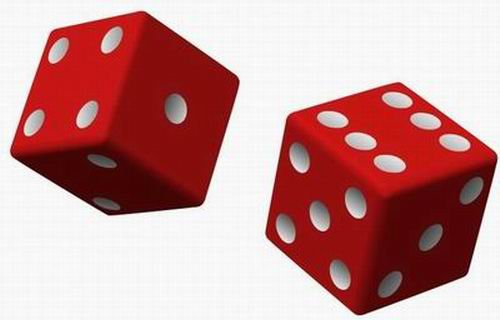
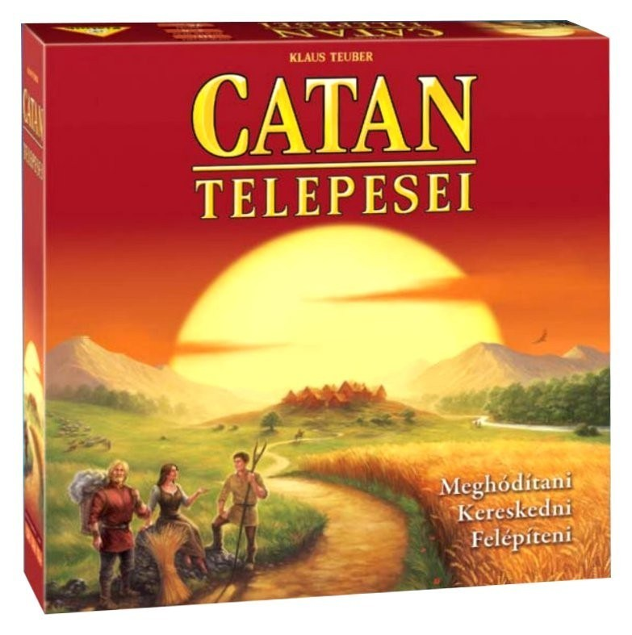
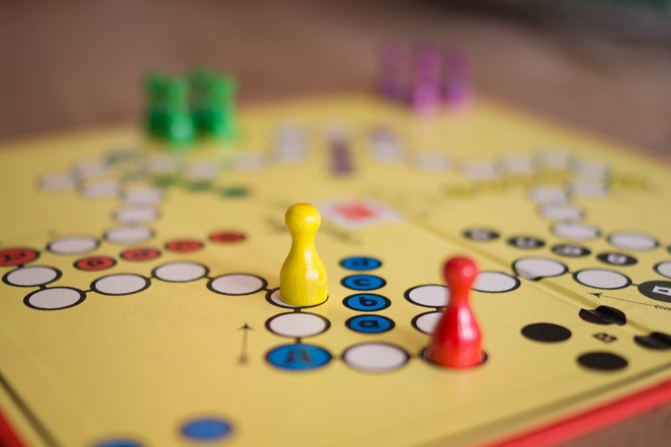
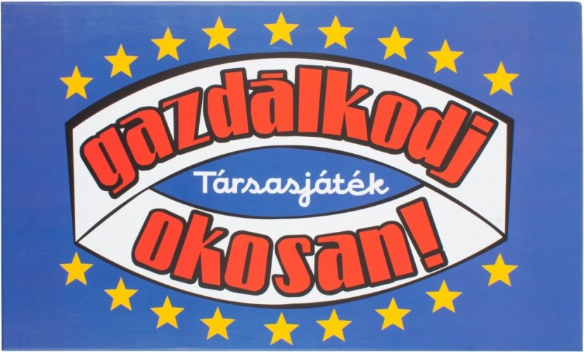
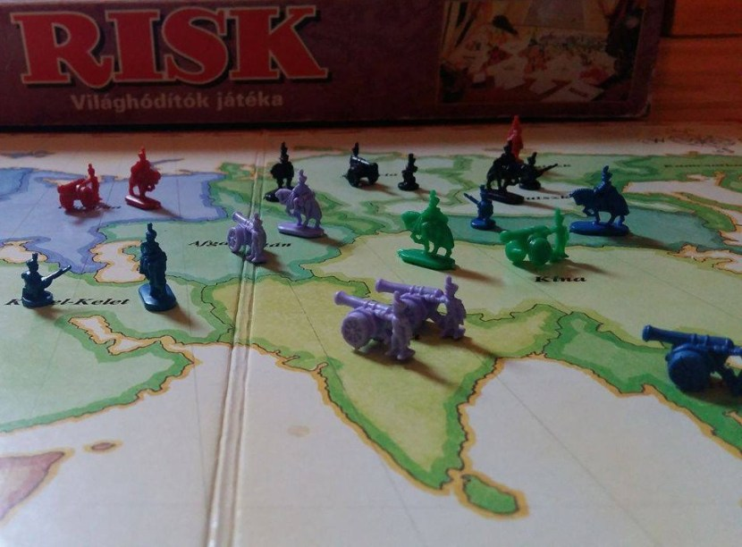

Dobókocka
A dobókocka vagy dobótest egy véletlenszám-generátorként használt poliéder. A dobókock a lapjait megkülönböztetik egymástól, például számokkal, színekkel vagy mintával. Olyan társasjátékok gyakori tartozéka, amelyekben a véletlennek fontos szerepe van: a dobókocka kellő erejű eldobása után ideális esetben mindegyik lap azonos valószínűséggel kerül felülre.
A dobótestek legismertebb és leggyakoribb fajtája a kocka. A hagyományos dobókocka lapjain 1-től 6-ig pöttyök szerepelnek úgy, hogy a szemben lévő lapokon lévő pöttyök számainak összege mindig hét.
A szerepjátékokban ismertek például a 4 (tetraéder), 8 (oktaéder), 10 (pentagonális antidipiramis), 12 (dodekaéder), 20 (ikozaéder), 30 (rombtriakontaéder), 100 oldalú dobótestek is. A tetra-, hexa-, dodeka- és ikozaéderek szabályos testek.
|  |  |  |
KockajátékAz ókori Európában közkedvelt jóslási forma és szerencsejáték volt a kockavetés. Ezt két kockával, egy pohár segítségével játszották, és az eredményre fogadást kötöttek, vagy misztikus jelentést tulajdonítottak neki. Ebből alakult ki a napjainkban a kaszinókban játszott kockajáték és a kockapóker, a póker egyszerűbb változata. 
|
Catan telepeseiA Catan telepesei egy többszemélyes táblás stratégiai játék, melyet Klaus Teuber talált ki. A játékot először Németországban a Franckh-Kosmos Verlags-GmbH & Co. adta ki 1995-ben Die Siedler von Catan néven. A Catan telepesei világszerte elterjedt, már huszonöt nyelvre lefordították. 1995-ben megszerezte Németországban a Spiel des Jahres (Az év játéka) címet. 1996-ban az Egyesült Államokban […]  |
Ki nevet a végén?A Ki nevet a végén? (a 60-as és a 70-es években Kocog és kidob néven is forgalmazták Magyarországon) egy táblás, kockadobásos társasjáték, elsősorban kisebb gyerekek részére, azóta számtalan különféle kiadásban és néven megjelent, gyakran Ludo, vagy egyéb fantázianeveken. A játék legismertebb neve, a "Ki nevet a végén?" egy szólásra utal: "Az nevet legjobban, aki utoljára nevet." […]  |
|
A Monopoly társasjáték; elődjét Charles Darrow találta fel 1935-ben. Az eredeti játéktábla, amelyet az USA-ban és a világbajnokságon is használnak, Atlantic City várost ábrázolja. A játékot 37 nyelven jelentették meg, többek között magyarul is, és több mint 250 millió példányban került el 103 országba.A játék lényege területeket és épületeket venni, eladni vagy bérelni egészen addig, […] |
A Gazdálkodj okosan! 1966-ban készült. A tervezés és kivitelezés feladatát a Közgazdasági és Jogi Könyvkiadó Minerva osztálya kapta meg. Jelentős eltérés a Monopolytól, hogy míg a Monopolyban azzal tehetünk szert előnyre, hogy a többi játékost […] |
A Rizikó társasjáték, klasszikus stratégiai társasjátékban a 2-6 játékos titkos katonai küldetést próbál végrehajtani, melynek célja a területek elfoglalása. A játékterep hat kontinensre, azon belül 42 körzetre van felosztva, amelyek közül néhány stratégiai előretolt állás. A területek védelme csak figyelmes tervezés után lehet sikeres. A súlyos vereségek fontos körzetek, vagy akár kontinensek elvesztését jelentik. A […] |